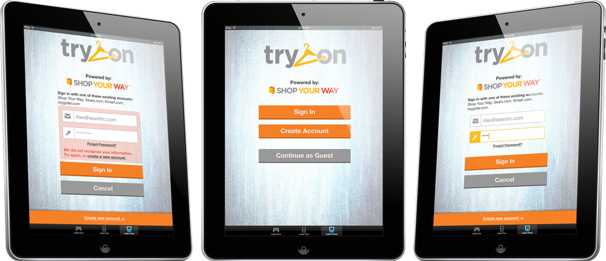
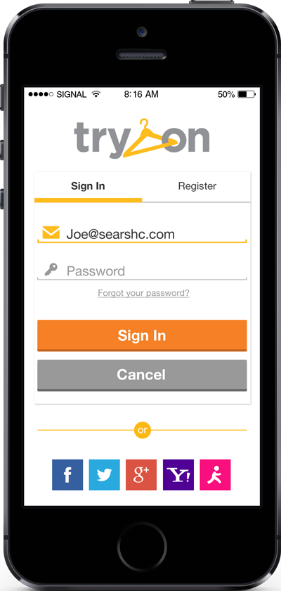
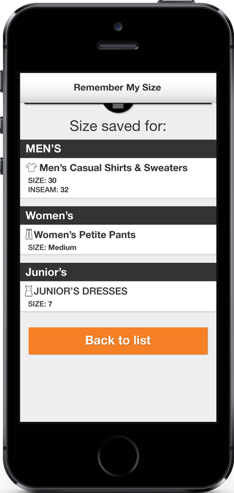
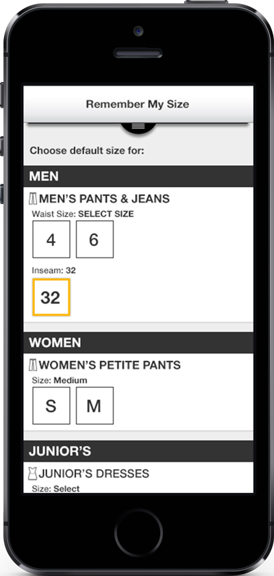
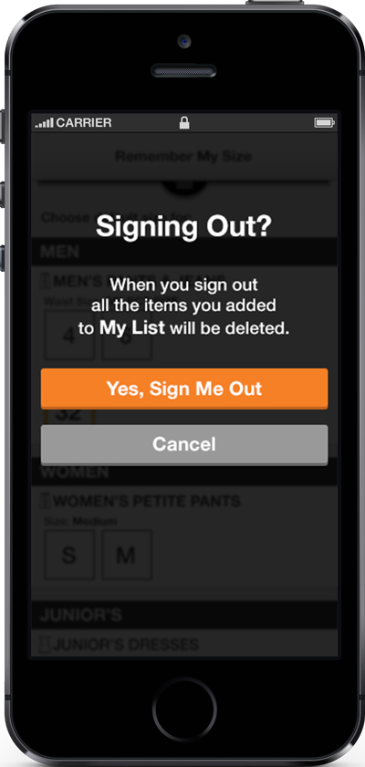

TryOn
Try On is an innovative program that Sears was one of the first retail services to market with that allowed customers scan clothes and have them ready in a dressing room. After a preliminary test of the application, I was brought on to work with a UXA to redesign and rework the flow based on data and customer feedback in order to provide a polished and pleasant experience that would be ready for a full nationwide roll out.




